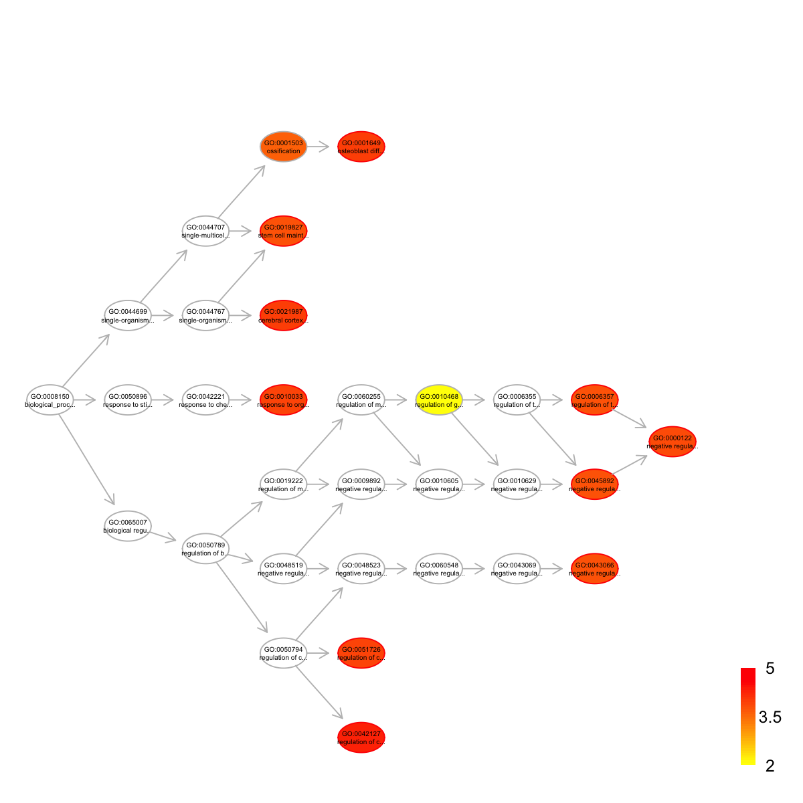
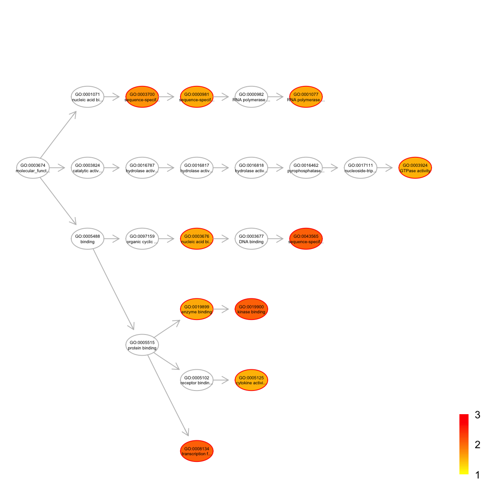
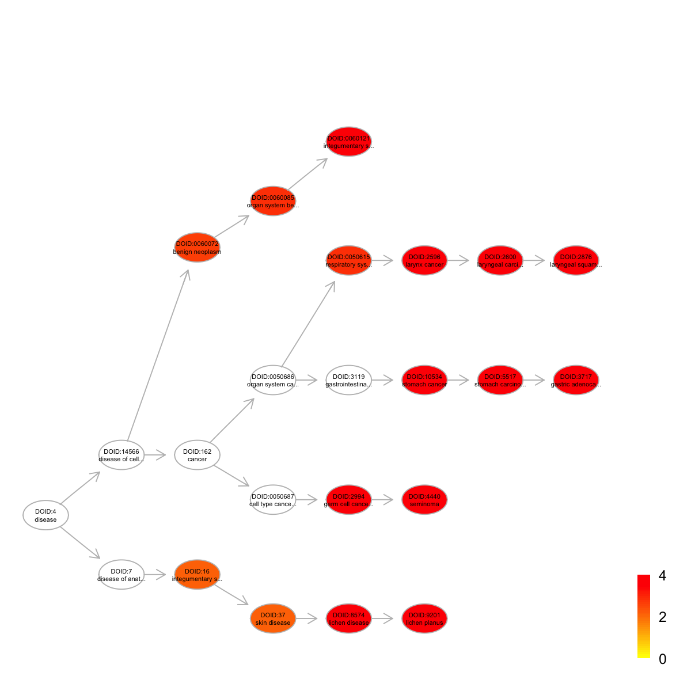

[1] "CpG" "EX" "RT"
# Load the package 'dnet'
library(dnet)
# Load or/and install packages "Biobase" and "limma" that are specifically used in this demo
for(pkg in c("Biobase","limma")){
if(!require(pkg, character.only=T)){
source("http://bioconductor.org/biocLite.R")
biocLite(pkg)
lapply(pkg, library, character.only=T)
}
}
# Here, we are interested to analyse replication timing data and their difference between different sample groups
# To this end, it is better to create the 'eset' object including sample grouping indication information
group <- c(rep("ESC",3), rep("iPSC",3), rep("eEpiblast",2), rep("lEpiblast",2), rep("Ectoderm",4), rep("Mesoderm",1), rep("Endoderm",1), rep("piPSC",3), rep("Myoblast",3))
pdata <- data.frame(group=group, row.names=colnames(RT))
esetGene <- new("ExpressionSet", exprs=as.matrix(RT), phenoData=as(pdata,"AnnotatedDataFrame"))
esetGene
ExpressionSet (storageMode: lockedEnvironment)
assayData: 17292 features, 22 samples
element names: exprs
protocolData: none
phenoData
sampleNames: ESC_46C ESC_D3 ... Myoblast (22 total)
varLabels: group
varMetadata: labelDescription
featureData: none
experimentData: use 'experimentData(object)'
Annotation:
# Look at the samples and their groups belonging to
pData(esetGene)
group
ESC_46C ESC
ESC_D3 ESC
ESC_TT2 ESC
iPSC iPSC
iPSC_1D4 iPSC
iPSC_2D4 iPSC
EPL eEpiblast
EBM3_D3 eEpiblast
EpiSC5 lEpiblast
EpiSC7 lEpiblast
EBM6_D3 Ectoderm
NPC_46C Ectoderm
NPC_TT2 Ectoderm
EBM9_D3 Ectoderm
Mesoderm Mesoderm
Endoderm Endoderm
piPSC_1A2 piPSC
piPSC_1B3 piPSC
piPSC_V3 piPSC
MEF_female Myoblast
MEF_male Myoblast
Myoblast Myoblast
'org.Mm.string' (from http://supfam.org/dnet/data/org.Mm.string.RData) has been loaded into the working environment
org.Mm.string
IGRAPH UN-- 18727 843379 --
+ attr: name (v/c), seqid (v/c), geneid (v/n), symbol (v/c),
description (v/c), neighborhood_score (e/n), fusion_score (e/n),
cooccurence_score (e/n), coexpression_score (e/n), experimental_score
(e/n), database_score (e/n), textmining_score (e/n), combined_score
(e/n)
# Look at the first 5 node information (gene symbols)
V(org.Mm.string)$symbol[1:5]
[1] "Enpp5" "Gabrb2" "Gm13212" "Tarsl2" "Fam134b"
IGRAPH UN-- 13512 622064 --
+ attr: name (v/c), seqid (v/c), geneid (v/n), symbol (v/c),
description (v/c)
# Identification of gene-active subnetwork
# 1) obtain the information associated with nodes/genes, such as the p-value significance as node information
# Here, we use the package 'limma' to identify differential Replication timing
## define the design matrix in an order manner
all <- as.vector(pData(esetGene)$group)
level <- levels(factor(all))
index_level <- sapply(level, function(x) which(all==x)[1])
level_sorted <- all[sort(index_level, decreasing=F)]
design <- sapply(level_sorted, function(x) as.numeric(all==x)) # Convert a factor column to multiple boolean columns
design
ESC iPSC eEpiblast lEpiblast Ectoderm Mesoderm Endoderm piPSC Myoblast
[1,] 1 0 0 0 0 0 0 0 0
[2,] 1 0 0 0 0 0 0 0 0
[3,] 1 0 0 0 0 0 0 0 0
[4,] 0 1 0 0 0 0 0 0 0
[5,] 0 1 0 0 0 0 0 0 0
[6,] 0 1 0 0 0 0 0 0 0
[7,] 0 0 1 0 0 0 0 0 0
[8,] 0 0 1 0 0 0 0 0 0
[9,] 0 0 0 1 0 0 0 0 0
[10,] 0 0 0 1 0 0 0 0 0
[11,] 0 0 0 0 1 0 0 0 0
[12,] 0 0 0 0 1 0 0 0 0
[13,] 0 0 0 0 1 0 0 0 0
[14,] 0 0 0 0 1 0 0 0 0
[15,] 0 0 0 0 0 1 0 0 0
[16,] 0 0 0 0 0 0 1 0 0
[17,] 0 0 0 0 0 0 0 1 0
[18,] 0 0 0 0 0 0 0 1 0
[19,] 0 0 0 0 0 0 0 1 0
[20,] 0 0 0 0 0 0 0 0 1
[21,] 0 0 0 0 0 0 0 0 1
[22,] 0 0 0 0 0 0 0 0 1
[1] "iPSC_ESC" "eEpiblast_ESC" "lEpiblast_ESC"
[4] "Ectoderm_ESC" "Mesoderm_ESC" "Endoderm_ESC"
[7] "piPSC_ESC" "Myoblast_ESC" "eEpiblast_iPSC"
[10] "lEpiblast_iPSC" "Ectoderm_iPSC" "Mesoderm_iPSC"
[13] "Endoderm_iPSC" "piPSC_iPSC" "Myoblast_iPSC"
[16] "lEpiblast_eEpiblast" "Ectoderm_eEpiblast" "Mesoderm_eEpiblast"
[19] "Endoderm_eEpiblast" "piPSC_eEpiblast" "Myoblast_eEpiblast"
[22] "Ectoderm_lEpiblast" "Mesoderm_lEpiblast" "Endoderm_lEpiblast"
[25] "piPSC_lEpiblast" "Myoblast_lEpiblast" "Mesoderm_Ectoderm"
[28] "Endoderm_Ectoderm" "piPSC_Ectoderm" "Myoblast_Ectoderm"
[31] "Endoderm_Mesoderm" "piPSC_Mesoderm" "Myoblast_Mesoderm"
[34] "piPSC_Endoderm" "Myoblast_Endoderm" "Myoblast_piPSC"
## a linear model is fitted for every gene by the function lmFit
fit <- lmFit(exprs(esetGene), design)
## computes moderated t-statistics and log-odds of differential expression by empirical Bayes shrinkage of the standard errors towards a common value
fit2 <- contrasts.fit(fit, contrast.matrix)
fit2 <- eBayes(fit2)
## for p-value
pvals <- as.matrix(fit2$p.value)
## for adjusted p-value
adjpvals <- sapply(1:ncol(pvals),function(x) {
p.adjust(pvals[,x], method="BH")
})
colnames(adjpvals) <- colnames(pvals)
## num of differentially expressed genes
apply(adjpvals<1e-2, 2, sum)
iPSC_ESC eEpiblast_ESC lEpiblast_ESC Ectoderm_ESC
0 102 1134 2120
Mesoderm_ESC Endoderm_ESC piPSC_ESC Myoblast_ESC
1050 959 2612 4171
eEpiblast_iPSC lEpiblast_iPSC Ectoderm_iPSC Mesoderm_iPSC
116 1224 2660 1147
Endoderm_iPSC piPSC_iPSC Myoblast_iPSC lEpiblast_eEpiblast
1167 2527 4862 91
Ectoderm_eEpiblast Mesoderm_eEpiblast Endoderm_eEpiblast piPSC_eEpiblast
563 95 106 1340
Myoblast_eEpiblast Ectoderm_lEpiblast Mesoderm_lEpiblast Endoderm_lEpiblast
2858 112 188 254
piPSC_lEpiblast Myoblast_lEpiblast Mesoderm_Ectoderm Endoderm_Ectoderm
1119 2736 118 346
piPSC_Ectoderm Myoblast_Ectoderm Endoderm_Mesoderm piPSC_Mesoderm
2373 2929 3 970
Myoblast_Mesoderm piPSC_Endoderm Myoblast_Endoderm Myoblast_piPSC
1362 1146 1773 2986
## only for the comparisons of piPSC against iPSC
my_contrast <- "piPSC_iPSC"
## get the p-values and calculate the scores thereupon
pval <- pvals[,my_contrast]
## look at the distribution of p-values
hist(pval)
 Start at 2015-07-13 12:14:10
First, fit the input p-value distribution under beta-uniform mixture model...
A total of p-values: 17292
Maximum Log-Likelihood: 17957.4
Mixture parameter (lambda): 0.412
Shape parameter (a): 0.218
Second, determine the significance threshold...
significance threshold: 5.50e-07
Third, calculate the scores according to the fitted BUM and FDR threshold (if any)...
Amongst 17292 scores, there are 188 positives.
Finally, find the subgraph from the input graph with 13512 nodes and 622064 edges...
Size of the subgraph: 79 nodes and 104 edges
Finish at 2015-07-13 12:16:07
Runtime in total is: 117 secs
Start at 2015-07-13 12:14:10
First, fit the input p-value distribution under beta-uniform mixture model...
A total of p-values: 17292
Maximum Log-Likelihood: 17957.4
Mixture parameter (lambda): 0.412
Shape parameter (a): 0.218
Second, determine the significance threshold...
significance threshold: 5.50e-07
Third, calculate the scores according to the fitted BUM and FDR threshold (if any)...
Amongst 17292 scores, there are 188 positives.
Finally, find the subgraph from the input graph with 13512 nodes and 622064 edges...
Size of the subgraph: 79 nodes and 104 edges
Finish at 2015-07-13 12:16:07
Runtime in total is: 117 secs
g
IGRAPH UN-- 79 104 --
+ attr: name (v/c), seqid (v/c), geneid (v/n), symbol (v/c),
description (v/c), score (v/n)


 Start at 2015-07-13 12:16:23
First, define topology of a map grid (2015-07-13 12:16:23)...
Second, initialise the codebook matrix (81 X 104) using 'linear' initialisation, given a topology and input data (2015-07-13 12:16:23)...
Third, get training at the rough stage (2015-07-13 12:16:23)...
1 out of 814 (2015-07-13 12:16:23)
82 out of 814 (2015-07-13 12:16:23)
164 out of 814 (2015-07-13 12:16:23)
246 out of 814 (2015-07-13 12:16:23)
328 out of 814 (2015-07-13 12:16:23)
410 out of 814 (2015-07-13 12:16:23)
492 out of 814 (2015-07-13 12:16:23)
574 out of 814 (2015-07-13 12:16:23)
656 out of 814 (2015-07-13 12:16:23)
738 out of 814 (2015-07-13 12:16:23)
814 out of 814 (2015-07-13 12:16:23)
Fourth, get training at the finetune stage (2015-07-13 12:16:23)...
1 out of 3256 (2015-07-13 12:16:23)
326 out of 3256 (2015-07-13 12:16:24)
652 out of 3256 (2015-07-13 12:16:24)
978 out of 3256 (2015-07-13 12:16:24)
1304 out of 3256 (2015-07-13 12:16:25)
1630 out of 3256 (2015-07-13 12:16:25)
1956 out of 3256 (2015-07-13 12:16:25)
2282 out of 3256 (2015-07-13 12:16:26)
2608 out of 3256 (2015-07-13 12:16:26)
2934 out of 3256 (2015-07-13 12:16:26)
3256 out of 3256 (2015-07-13 12:16:27)
Next, identify the best-matching hexagon/rectangle for the input data (2015-07-13 12:16:27)...
Finally, append the response data (hits and mqe) into the sMap object (2015-07-13 12:16:27)...
Below are the summaries of the training results:
dimension of input data: 22x104
xy-dimension of map grid: xdim=9, ydim=9
grid lattice: rect
grid shape: sheet
dimension of grid coord: 81x2
initialisation method: linear
dimension of codebook matrix: 81x104
mean quantization error: 1.5443290393328
Below are the details of trainology:
training algorithm: sequential
alpha type: invert
training neighborhood kernel: gaussian
trainlength (x input data length): 37 at rough stage; 148 at finetune stage
radius (at rough stage): from 2 to 1
radius (at finetune stage): from 1 to 1
End at 2015-07-13 12:16:27
Runtime in total is: 4 secs
Start at 2015-07-13 12:16:23
First, define topology of a map grid (2015-07-13 12:16:23)...
Second, initialise the codebook matrix (81 X 104) using 'linear' initialisation, given a topology and input data (2015-07-13 12:16:23)...
Third, get training at the rough stage (2015-07-13 12:16:23)...
1 out of 814 (2015-07-13 12:16:23)
82 out of 814 (2015-07-13 12:16:23)
164 out of 814 (2015-07-13 12:16:23)
246 out of 814 (2015-07-13 12:16:23)
328 out of 814 (2015-07-13 12:16:23)
410 out of 814 (2015-07-13 12:16:23)
492 out of 814 (2015-07-13 12:16:23)
574 out of 814 (2015-07-13 12:16:23)
656 out of 814 (2015-07-13 12:16:23)
738 out of 814 (2015-07-13 12:16:23)
814 out of 814 (2015-07-13 12:16:23)
Fourth, get training at the finetune stage (2015-07-13 12:16:23)...
1 out of 3256 (2015-07-13 12:16:23)
326 out of 3256 (2015-07-13 12:16:24)
652 out of 3256 (2015-07-13 12:16:24)
978 out of 3256 (2015-07-13 12:16:24)
1304 out of 3256 (2015-07-13 12:16:25)
1630 out of 3256 (2015-07-13 12:16:25)
1956 out of 3256 (2015-07-13 12:16:25)
2282 out of 3256 (2015-07-13 12:16:26)
2608 out of 3256 (2015-07-13 12:16:26)
2934 out of 3256 (2015-07-13 12:16:26)
3256 out of 3256 (2015-07-13 12:16:27)
Next, identify the best-matching hexagon/rectangle for the input data (2015-07-13 12:16:27)...
Finally, append the response data (hits and mqe) into the sMap object (2015-07-13 12:16:27)...
Below are the summaries of the training results:
dimension of input data: 22x104
xy-dimension of map grid: xdim=9, ydim=9
grid lattice: rect
grid shape: sheet
dimension of grid coord: 81x2
initialisation method: linear
dimension of codebook matrix: 81x104
mean quantization error: 1.5443290393328
Below are the details of trainology:
training algorithm: sequential
alpha type: invert
training neighborhood kernel: gaussian
trainlength (x input data length): 37 at rough stage; 148 at finetune stage
radius (at rough stage): from 2 to 1
radius (at finetune stage): from 1 to 1
End at 2015-07-13 12:16:27
Runtime in total is: 4 secs


# 8) output the subnetwork and their replication timing data
## Write the subnetwork into a SIF-formatted file (Simple Interaction File)
sif <- data.frame(source=get.edgelist(g)[,1], type="interaction", target=get.edgelist(g)[,2])
write.table(sif, file=paste(my_contrast,".sif", sep=""), quote=F, row.names=F,col.names=F,sep="\t")
## Output the corresponding replication timing data
hmap <- data.frame(Symbol=rownames(data), data)
write.table(hmap, file=paste(my_contrast,".txt", sep=""), quote=F, row.names=F,col.names=T,sep="\t")
# 9) enrichment analysis for genes in the subnetwork
## get a list of genes in the subnetwork
data <- V(g)$name
data
[1] "Cckar" "2410141K09Rik" "3300002I08Rik" "Gng2"
[5] "Zfp369" "Phf20l1" "Zfp748" "Sdha"
[9] "Rasl2-9" "2610305D13Rik" "Epn1" "2700060E02Rik"
[13] "Cryz" "Slc1a3" "Zfp715" "Napg"
[17] "Rsl1" "Rab17" "Zfp120" "Bcl2"
[21] "Ibsp" "Ptdss1" "Spg20" "Taf7"
[25] "Atoh1" "Lrrc28" "Mepe" "Cat"
[29] "Lig1" "Tnfaip3" "Ubb" "Atg3"
[33] "Vim" "Serpinb5" "Plcb1" "Pdhx"
[37] "Prok2" "Uqcrb" "Zfp456" "Rb1"
[41] "Klf7" "Frk" "Mpp1" "Cxcl15"
[45] "Itpr2" "Olig3" "Zfp459" "Ranbp2"
[49] "Ifngr1" "Tpo" "Nxf3" "Perp"
[53] "Maged2" "Sox2" "Cxcl5" "Zfp455"
[57] "AW146154" "Klf4" "Apip" "Zfp329"
[61] "Rex2" "Spp1" "Vps4b" "Efna5"
[65] "Zfp97" "Abcg2" "Notch2" "Tnni3k"
[69] "Tbx3" "Il22ra2" "Cd44" "Ptpre"
[73] "Zfp458" "Gucy2c" "Ehf" "Klf8"
[77] "Zfp42" "Zfp457" "Grik3"
Start at 2015-07-13 12:19:25
First, load the ontology GOBP and its gene associations in the genome Mm (2015-07-13 12:19:25) ...
'org.Mm.eg' (from http://supfam.org/dnet/data/org.Mm.eg.RData) has been loaded into the working environment
'org.Mm.egGOBP' (from http://supfam.org/dnet/data/org.Mm.egGOBP.RData) has been loaded into the working environment
Then, do mapping based on symbol (2015-07-13 12:19:28) ...
Among 79 symbols of input data, there are 79 mappable via official gene symbols but 0 left unmappable
Third, perform enrichment analysis using HypergeoTest (2015-07-13 12:19:28) ...
There are 2130 terms being used, each restricted within [10,1000] annotations
Last, adjust the p-values using the BH method (2015-07-13 12:19:28) ...
End at 2015-07-13 12:19:28
Runtime in total is: 3 secs
'ig.GOBP' (from http://supfam.org/dnet/data/ig.GOBP.RData) has been loaded into the working environment
setID nAnno nOverlap zscore pvalue adjp
GO:0051881 GO:0051881 28 3 8.47 5.2e-06 0.00022
GO:0042127 GO:0042127 199 6 5.74 1.8e-05 0.00038
GO:0001649 GO:0001649 93 4 5.84 4.1e-05 0.00043
GO:0021987 GO:0021987 46 3 6.44 3.9e-05 0.00043
GO:0010033 GO:0010033 52 3 6.01 6.3e-05 0.00053
GO:0007219 GO:0007219 109 4 5.30 8.8e-05 0.00060
GO:0043066 GO:0043066 462 8 4.46 1.1e-04 0.00060
GO:0051726 GO:0051726 114 4 5.15 1.1e-04 0.00060
GO:0032088 GO:0032088 65 3 5.27 1.5e-04 0.00071
GO:0019827 GO:0019827 67 3 5.18 1.7e-04 0.00072
name
GO:0051881 regulation of mitochondrial membrane potential
GO:0042127 regulation of cell proliferation
GO:0001649 osteoblast differentiation
GO:0021987 cerebral cortex development
GO:0010033 response to organic substance
GO:0007219 Notch signaling pathway
GO:0043066 negative regulation of apoptotic process
GO:0051726 regulation of cell cycle
GO:0032088 negative regulation of NF-kappaB transcription factor activity
GO:0019827 stem cell maintenance
namespace distance members
GO:0051881 Process 5 Bcl2,Spg20,Ubb
GO:0042127 Process 5 Klf4,Tbx3,Cxcl5,Cxcl15,Gucy2c,Frk
GO:0001649 Process 5 Sox2,Cat,Ibsp,Spp1
GO:0021987 Process 4 Plcb1,Sox2,Atoh1
GO:0010033 Process 4 Klf4,Sox2,Spp1
GO:0007219 Process 7 Notch2,Epn1,Atoh1,Perp
GO:0043066 Process 8 Tbx3,Bcl2,Cat,Spp1,Prok2,Cd44,Atoh1,Apip
GO:0051726 Process 5 Rb1,Plcb1,Bcl2,Zfp369
GO:0032088 Process 13 Klf4,Cat,Tnfaip3
GO:0019827 Process 4 Klf4,Sox2,Tbx3
Start at 2015-07-13 12:19:37
First, load the ontology GOMF and its gene associations in the genome Mm (2015-07-13 12:19:37) ...
'org.Mm.eg' (from http://supfam.org/dnet/data/org.Mm.eg.RData) has been loaded into the working environment
'org.Mm.egGOMF' (from http://supfam.org/dnet/data/org.Mm.egGOMF.RData) has been loaded into the working environment
Then, do mapping based on symbol (2015-07-13 12:19:39) ...
Among 79 symbols of input data, there are 79 mappable via official gene symbols but 0 left unmappable
Third, perform enrichment analysis using HypergeoTest (2015-07-13 12:19:39) ...
There are 1036 terms being used, each restricted within [10,1000] annotations
Last, adjust the p-values using the BH method (2015-07-13 12:19:40) ...
End at 2015-07-13 12:19:40
Runtime in total is: 3 secs

'ig.GOMF' (from http://supfam.org/dnet/data/ig.GOMF.RData) has been loaded into the working environment
setID nAnno nOverlap zscore pvalue adjp
GO:0008134 GO:0008134 319 6 3.95 0.00047 0.0083
GO:0019900 GO:0019900 83 3 4.39 0.00047 0.0083
GO:0043565 GO:0043565 564 8 3.60 0.00072 0.0084
GO:0003700 GO:0003700 791 9 3.07 0.00210 0.0180
GO:0000981 GO:0000981 159 3 2.78 0.00510 0.0260
GO:0001077 GO:0001077 248 4 2.83 0.00450 0.0260
GO:0019899 GO:0019899 353 5 2.82 0.00440 0.0260
GO:0003676 GO:0003676 774 8 2.58 0.00620 0.0270
GO:0003924 GO:0003924 211 3 2.18 0.01400 0.0290
GO:0005125 GO:0005125 208 3 2.21 0.01300 0.0290
name
GO:0008134 transcription factor binding
GO:0019900 kinase binding
GO:0043565 sequence-specific DNA binding
GO:0003700 sequence-specific DNA binding transcription factor activity
GO:0000981 sequence-specific DNA binding RNA polymerase II transcription factor activity
GO:0001077 RNA polymerase II core promoter proximal region sequence-specific DNA binding transcription factor activity involved in positive regulation of transcription
GO:0019899 enzyme binding
GO:0003676 nucleic acid binding
GO:0003924 GTPase activity
GO:0005125 cytokine activity
namespace distance members
GO:0008134 Function 4 Klf4,Sox2,Rb1,Bcl2,Taf7,Epn1
GO:0019900 Function 5 Rb1,Vim,Tnfaip3
GO:0043565 Function 6 Klf4,Sox2,Atoh1,Ehf,Tbx3,Zfp369,Zfp42,Rsl1
GO:0003700 Function 3 Klf4,Sox2,Ehf,Tbx3,Zfp369,Klf7,Taf7,Zfp457,Rex2
GO:0000981 Function 4 Sox2,Ehf,Zfp369
GO:0001077 Function 6 Klf4,Sox2,Atoh1,Ehf
GO:0019899 Function 4 Rb1,Plcb1,Cat,Notch2,Atg3
GO:0003676 Function 4 Klf4,Zfp369,Zfp42,Zfp329,Klf7,Zfp120,Zfp458,Klf8
GO:0003924 Function 8 Gng2,Rab17,Rasl2-9
GO:0005125 Function 5 Cxcl15,Cxcl5,Spp1
Start at 2015-07-13 12:19:47
First, load the ontology MP and its gene associations in the genome Mm (2015-07-13 12:19:47) ...
'org.Mm.eg' (from http://supfam.org/dnet/data/org.Mm.eg.RData) has been loaded into the working environment
'org.Mm.egMP' (from http://supfam.org/dnet/data/org.Mm.egMP.RData) has been loaded into the working environment
Then, do mapping based on symbol (2015-07-13 12:19:54) ...
Among 79 symbols of input data, there are 79 mappable via official gene symbols but 0 left unmappable
Third, perform enrichment analysis using HypergeoTest (2015-07-13 12:19:55) ...
There are 4888 terms being used, each restricted within [10,1000] annotations
Last, adjust the p-values using the BH method (2015-07-13 12:19:57) ...
End at 2015-07-13 12:19:58
Runtime in total is: 11 secs

'ig.MP' (from http://supfam.org/dnet/data/ig.MP.RData) has been loaded into the working environment
setID nAnno nOverlap zscore pvalue adjp
MP:0002019 MP:0002019 916 15 5.45 2.1e-06 0.00038
MP:0002166 MP:0002166 930 15 5.38 2.6e-06 0.00038
MP:0004326 MP:0004326 20 3 9.55 1.9e-06 0.00038
MP:0010209 MP:0010209 22 3 9.08 2.9e-06 0.00038
MP:0001657 MP:0001657 588 11 5.15 1.2e-05 0.00063
MP:0002020 MP:0002020 816 13 4.92 1.4e-05 0.00063
MP:0002739 MP:0002739 57 4 7.28 6.2e-06 0.00063
MP:0003091 MP:0003091 496 10 5.19 1.3e-05 0.00063
MP:0004279 MP:0004279 32 3 7.41 1.4e-05 0.00063
MP:0005076 MP:0005076 686 12 5.10 1.0e-05 0.00063
name namespace
MP:0002019 abnormal tumor incidence Mammalian_phenotype
MP:0002166 altered tumor susceptibility Mammalian_phenotype
MP:0004326 abnormal vestibular hair cell number Mammalian_phenotype
MP:0010209 abnormal circulating chemokine level Mammalian_phenotype
MP:0001657 abnormal induced morbidity/mortality Mammalian_phenotype
MP:0002020 increased tumor incidence Mammalian_phenotype
MP:0002739 abnormal olfactory bulb development Mammalian_phenotype
MP:0003091 abnormal cell migration Mammalian_phenotype
MP:0004279 abnormal rostral migratory stream morphology Mammalian_phenotype
MP:0005076 abnormal cell differentiation Mammalian_phenotype
distance
MP:0002019 3
MP:0002166 2
MP:0004326 8
MP:0010209 7
MP:0001657 2
MP:0002020 4
MP:0002739 5
MP:0003091 3
MP:0004279 9
MP:0005076 3
members
MP:0002019 Spg20,Bcl2,Rb1,Sox2,Spp1,Ifngr1,Cd44,Lig1,Cat,Notch2,Epn1,Klf4,Ranbp2,Perp,Il22ra2
MP:0002166 Spg20,Bcl2,Rb1,Sox2,Spp1,Ifngr1,Cd44,Lig1,Cat,Notch2,Epn1,Klf4,Ranbp2,Perp,Il22ra2
MP:0004326 Rb1,Atoh1,Sox2
MP:0010209 Ifngr1,Cd44,Cxcl5
MP:0001657 Gucy2c,Rb1,Spp1,Ifngr1,Cd44,Cat,Tnfaip3,Cxcl5,Vim,Epn1,Atg3
MP:0002020 Spg20,Bcl2,Rb1,Sox2,Ifngr1,Cd44,Lig1,Cat,Notch2,Klf4,Ranbp2,Perp,Il22ra2
MP:0002739 Efna5,Cckar,Prok2,Olig3
MP:0003091 Spg20,Atoh1,Spp1,Efna5,Cd44,Vim,Klf4,Cckar,Olig3,Mpp1
MP:0004279 Cckar,Prok2,Olig3
MP:0005076 Rb1,Sox2,Slc1a3,Ifngr1,Cd44,Ptpre,Klf7,Notch2,Vim,Klf4,Cckar,Olig3
Start at 2015-07-13 12:20:10
First, load the ontology DO and its gene associations in the genome Mm (2015-07-13 12:20:10) ...
'org.Mm.eg' (from http://supfam.org/dnet/data/org.Mm.eg.RData) has been loaded into the working environment
'org.Mm.egDO' (from http://supfam.org/dnet/data/org.Mm.egDO.RData) has been loaded into the working environment
Then, do mapping based on symbol (2015-07-13 12:20:23) ...
Among 79 symbols of input data, there are 79 mappable via official gene symbols but 0 left unmappable
Third, perform enrichment analysis using HypergeoTest (2015-07-13 12:20:23) ...
There are 898 terms being used, each restricted within [10,1000] annotations
Last, adjust the p-values using the BH method (2015-07-13 12:20:23) ...
End at 2015-07-13 12:20:24
Runtime in total is: 14 secs
 'ig.DO' (from http://supfam.org/dnet/data/ig.DO.RData) has been loaded into the working environment
'ig.DO' (from http://supfam.org/dnet/data/ig.DO.RData) has been loaded into the working environment
setID nAnno nOverlap zscore pvalue adjp
DOID:4440 DOID:4440 25 4 9.74 3.7e-07 5.4e-05
DOID:2596 DOID:2596 77 5 6.55 7.1e-06 2.6e-04
DOID:2600 DOID:2600 75 5 6.66 6.1e-06 2.6e-04
DOID:2876 DOID:2876 75 5 6.66 6.1e-06 2.6e-04
DOID:10534 DOID:10534 91 5 5.92 1.9e-05 3.7e-04
DOID:3717 DOID:3717 86 5 6.13 1.3e-05 3.7e-04
DOID:5517 DOID:5517 89 5 6.00 1.6e-05 3.7e-04
DOID:8574 DOID:8574 56 4 6.19 2.3e-05 3.7e-04
DOID:9201 DOID:9201 56 4 6.19 2.3e-05 3.7e-04
DOID:0060121 DOID:0060121 30 3 6.51 3.3e-05 4.3e-04
name namespace distance
DOID:4440 seminoma Disease_Ontology 5
DOID:2596 larynx cancer Disease_Ontology 5
DOID:2600 laryngeal carcinoma Disease_Ontology 6
DOID:2876 laryngeal squamous cell carcinoma Disease_Ontology 7
DOID:10534 stomach cancer Disease_Ontology 5
DOID:3717 gastric adenocarcinoma Disease_Ontology 7
DOID:5517 stomach carcinoma Disease_Ontology 6
DOID:8574 lichen disease Disease_Ontology 4
DOID:9201 lichen planus Disease_Ontology 5
DOID:0060121 integumentary system benign neoplasm Disease_Ontology 4
members
DOID:4440 Rb1,Sox2,Klf4,Bcl2
DOID:2596 Rb1,Spp1,Cd44,Bcl2,Serpinb5
DOID:2600 Rb1,Spp1,Cd44,Bcl2,Serpinb5
DOID:2876 Rb1,Spp1,Cd44,Bcl2,Serpinb5
DOID:10534 Spp1,Klf4,Cd44,Bcl2,Serpinb5
DOID:3717 Spp1,Klf4,Cd44,Bcl2,Serpinb5
DOID:5517 Spp1,Klf4,Cd44,Bcl2,Serpinb5
DOID:8574 Spp1,Cd44,Bcl2,Abcg2
DOID:9201 Spp1,Cd44,Bcl2,Abcg2
DOID:0060121 Sox2,Spp1,Notch2
Start at 2015-07-13 12:20:29
First, load the ontology PS and its gene associations in the genome Mm (2015-07-13 12:20:29) ...
'org.Mm.eg' (from http://supfam.org/dnet/data/org.Mm.eg.RData) has been loaded into the working environment
'org.Mm.egPS' (from http://supfam.org/dnet/data/org.Mm.egPS.RData) has been loaded into the working environment
Then, do mapping based on symbol (2015-07-13 12:20:40) ...
Among 79 symbols of input data, there are 79 mappable via official gene symbols but 0 left unmappable
Third, perform enrichment analysis using HypergeoTest (2015-07-13 12:20:40) ...
There are 27 terms being used, each restricted within [10,20000] annotations
Last, adjust the p-values using the BH method (2015-07-13 12:20:40) ...
End at 2015-07-13 12:20:40
Runtime in total is: 11 secs

setID nAnno nOverlap zscore pvalue adjp name
3 3 8431 20 -4.250 1.0e+00 1.0e+00 2759:Eukaryota
4 4 2504 12 0.278 3.2e-01 4.7e-01 33154:Opisthokonta
5 5 468 3 0.645 1.6e-01 3.0e-01 33154:Opisthokonta
6 6 139 0 -0.792 4.6e-01 5.6e-01 33154:Opisthokonta
7 7 176 1 0.246 1.8e-01 3.3e-01 33154:Opisthokonta
8 8 172 0 -0.882 5.4e-01 5.8e-01 33154:Opisthokonta
9 9 106 2 2.240 1.2e-02 5.3e-02 33208:Metazoa
10 10 123 1 0.615 1.0e-01 2.3e-01 33208:Metazoa
11 11 374 1 -0.523 5.0e-01 5.6e-01 33208:Metazoa
12 12 331 0 -1.230 7.8e-01 8.1e-01 6072:Eumetazoa
13 13 122 2 1.990 1.7e-02 6.6e-02 6072:Eumetazoa
14 14 274 1 -0.202 3.5e-01 4.7e-01 33213:Bilateria
15 15 120 0 -0.736 4.2e-01 5.3e-01 33213:Bilateria
16 16 590 2 -0.396 4.9e-01 5.6e-01 33511:Deuterostomia
17 17 92 0 -0.643 3.4e-01 4.7e-01 33511:Deuterostomia
18 18 73 1 1.190 4.2e-02 1.4e-01 7711:Chordata
19 19 104 1 0.793 7.8e-02 1.9e-01 7742:Vertebrata
20 20 599 3 0.208 2.8e-01 4.5e-01 117571:Euteleostomi
21 21 73 3 4.710 3.1e-04 2.8e-03 8287:Sarcopterygii
22 22 96 1 0.880 6.8e-02 1.9e-01 32523:Tetrapoda
23 23 177 4 3.650 1.1e-03 7.7e-03 32524:Amniota
24 24 30 0 -0.367 1.3e-01 2.6e-01 40674:Mammalia
25 25 97 4 5.460 7.1e-05 9.6e-04 32525:Theria
26 26 75 0 -0.581 2.9e-01 4.5e-01 9347:Eutheria
27 27 62 5 9.030 3.2e-07 8.5e-06 1437010:Boreoeutheria
29 29 16 0 -0.268 6.9e-02 1.9e-01 314147:Glires
75 75 69 2 3.070 3.6e-03 1.9e-02 10090:Mus musculus
namespace distance
3 superkingdom 0.00000000
4 no rank 0.02227541
5 no rank 0.02677301
6 no rank 0.03026936
7 no rank 0.03573534
8 no rank 0.03880849
9 kingdom 0.04949159
10 kingdom 0.06686750
11 kingdom 0.09260898
12 no rank 0.10459007
13 no rank 0.11176118
14 no rank 0.12058364
15 no rank 0.12660301
16 no rank 0.13884801
17 no rank 0.14852778
18 phylum 0.15759842
19 no rank 0.16953129
20 no rank 0.18295445
21 no rank 0.18554672
22 no rank 0.18855901
23 no rank 0.19241034
24 class 0.19552877
25 no rank 0.19917128
26 no rank 0.20262687
27 no rank 0.20409224
29 no rank 0.20521882
75 species 0.23690599
members
3 Cat,Cd44,Cryz,Efna5,Epn1,Ifngr1,Lig1,Rab17,Rasl2-9,Vps4b,Slc1a3,Serpinb5,Zfp42,Abcg2,Pdhx,Apip,Sdha,Uqcrb,Lrrc28,Napg
4 Atoh1,Cckar,Grik3,Klf4,Rb1,Sox2,Ubb,Klf7,Olig3,Spg20,Klf8,Tnni3k
5 Gng2,Ptpre,Il22ra2
6
7 Tbx3
8
9 Frk,Mpp1
10 Itpr2
11 Bcl2
12
13 Ehf,Plcb1
14 Zfp329
15
16 Gucy2c,Vim
17
18 Tpo
19 Prok2
20 Cxcl15,Cxcl5,Phf20l1
21 Zfp97,Zfp715,2610305D13Rik
22 3300002I08Rik
23 Zfp748,Zfp455,Zfp457,Rex2
24
25 AW146154,Zfp120,Rsl1,Zfp456
26
27 Ranbp2,2410141K09Rik,Zfp369,Nxf3,Zfp459
29
75 Notch2,Zfp458
Start at 2015-07-13 12:20:40
First, load the ontology PS2 and its gene associations in the genome Mm (2015-07-13 12:20:40) ...
'org.Mm.eg' (from http://supfam.org/dnet/data/org.Mm.eg.RData) has been loaded into the working environment
'org.Mm.egPS' (from http://supfam.org/dnet/data/org.Mm.egPS.RData) has been loaded into the working environment
Then, do mapping based on symbol (2015-07-13 12:20:47) ...
Among 79 symbols of input data, there are 79 mappable via official gene symbols but 0 left unmappable
Third, perform enrichment analysis using HypergeoTest (2015-07-13 12:20:47) ...
There are 18 terms being used, each restricted within [10,20000] annotations
Last, adjust the p-values using the BH method (2015-07-13 12:20:47) ...
End at 2015-07-13 12:20:47
Runtime in total is: 7 secs
setID nAnno nOverlap zscore pvalue adjp name
3 3 8431 20 -4.2500 1.0e+00 1.0e+00 2759:Eukaryota
8 8 3459 16 0.1730 3.7e-01 4.4e-01 33154:Opisthokonta
11 11 603 4 0.8200 1.3e-01 2.1e-01 33208:Metazoa
13 13 453 2 -0.0124 3.3e-01 4.2e-01 6072:Eumetazoa
15 15 394 1 -0.5780 5.3e-01 5.9e-01 33213:Bilateria
17 17 682 2 -0.6100 5.9e-01 6.3e-01 33511:Deuterostomia
18 18 73 1 1.1900 4.2e-02 1.3e-01 7711:Chordata
19 19 104 1 0.7930 7.8e-02 1.6e-01 7742:Vertebrata
20 20 599 3 0.2080 2.8e-01 3.9e-01 117571:Euteleostomi
21 21 73 3 4.7100 3.1e-04 1.9e-03 8287:Sarcopterygii
22 22 96 1 0.8800 6.8e-02 1.6e-01 32523:Tetrapoda
23 23 177 4 3.6500 1.1e-03 5.2e-03 32524:Amniota
24 24 30 0 -0.3670 1.3e-01 2.1e-01 40674:Mammalia
25 25 97 4 5.4600 7.1e-05 6.4e-04 32525:Theria
26 26 75 0 -0.5810 2.9e-01 3.9e-01 9347:Eutheria
27 27 62 5 9.0300 3.2e-07 5.7e-06 1437010:Boreoeutheria
68 68 17 0 -0.2760 7.3e-02 1.6e-01 314147:Glires
75 75 69 2 3.0700 3.6e-03 1.3e-02 10090:Mus musculus
namespace distance
3 superkingdom 0
8 no rank 0.03880849
11 kingdom 0.09260898
13 no rank 0.1117612
15 no rank 0.126603
17 no rank 0.1485278
18 phylum 0.1575984
19 no rank 0.1695313
20 no rank 0.1829545
21 no rank 0.1855467
22 no rank 0.188559
23 no rank 0.1924103
24 class 0.1955288
25 no rank 0.1991713
26 no rank 0.2026269
27 no rank 0.2040922
68 no rank 0.2070103
75 species 0.236906
members
3 Cat,Cd44,Cryz,Efna5,Epn1,Ifngr1,Lig1,Rab17,Rasl2-9,Vps4b,Slc1a3,Serpinb5,Zfp42,Abcg2,Pdhx,Apip,Sdha,Uqcrb,Lrrc28,Napg
8 Atoh1,Cckar,Grik3,Klf4,Rb1,Sox2,Ubb,Klf7,Olig3,Spg20,Klf8,Tnni3k,Gng2,Ptpre,Il22ra2,Tbx3
11 Frk,Mpp1,Itpr2,Bcl2
13 Ehf,Plcb1
15 Zfp329
17 Gucy2c,Vim
18 Tpo
19 Prok2
20 Cxcl15,Cxcl5,Phf20l1
21 Zfp97,Zfp715,2610305D13Rik
22 3300002I08Rik
23 Zfp748,Zfp455,Zfp457,Rex2
24
25 AW146154,Zfp120,Rsl1,Zfp456
26
27 Ranbp2,2410141K09Rik,Zfp369,Nxf3,Zfp459
68
75 Notch2,Zfp458
)
)
)
)
)
)
)
){kind=link}
){kind=link}
){kind=link}